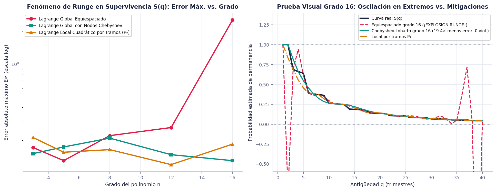

Regresión Lineal (MCO) vs.
Interpolación de Lagrange en Datos Reales
Qué es JobPath: análisis numérico de 1,993,291 registros laborales crudos de JobHop v2 (1,738,738 empleos clasificados) enriquecidos con los 3,039 oficios y 126,051 relaciones del catálogo europeo ESCO v1.2.1 / ISCO-08. Aquí unificamos los dos casos emblemáticos sobre la duración de empleos cerrados (~es_vigente): Caso 1 (IDEA-RL-04 · MCO) y Caso 2 (IDEA-LG-01 · Lagrange).
t = año − 2000 baja el error vs. polyfit a 3.55e-15~es_vigente) reconstruidos desde 4 hitosE∞ baja 2.53 → 0.130 · 0 violaciones [0,1]1. Marco Común (Diaps. 2–3)
Mapa rápido de las 4 capas de data/ adaptado a estos 2 casos + catálogo completo de las 12 reglas MR-01 a MR-12.
2. Dos Casos en Profundidad (Diaps. 4–14)
Analogías cotidianas, fórmulas explicadas símbolo por símbolo, 2 simuladores JS en vivo, gráficas 150 DPI y tablas CSV verificadas.
3. Síntesis y Cierre (Diaps. 15–16)
Comparativa directa MCO vs. Lagrange, regla de decisión y cierre ejecutivo. Teclas: ← → avanzar · . revelar símbolos · F pantalla completa.
Un mismo fenómeno real (duración laboral) y el Mapa de las 4 Capas de data/
¿Por qué unificar IDEA-RL-04 (MCO) e IDEA-LG-01 (Lagrange)?
- Misma base real: ambos estudian la duración (en trimestres
q) de empleos finalizados (~es_vigente,MR-09). - Preguntas opuestas: Caso 1 (MCO) ajusta una tendencia anual con ruido (
2000–2019); Caso 2 (Lagrange) reconstruye exactamenteS(q)desde 4 hitos (1, 2, 5 y 10 años). - Misma alerta (
MR-05): ambos violan la física al extrapolar (−4.96trim. en 2027 y−59.84 %enq=48).
Claves del lenguaje de datos
q(trimestre): unidad de tiempo laboral (4trim. =1año;40=10años).~es_vigente(MR-09): excluye empleos activos imputados a2026-Q1.mean_skills / mean_green(MR-08): competencias y fracción verde (greenShare) exigidas por el oficio ESCO, nunca del individuo.
🗂 Mapa rápido de las 4 capas de data/ (solo lectura) aplicado a Caso 1 y Caso 2
| Capa | Qué guarda exactamente | Volumen real | Uso en Caso 1 (IDEA-RL-04 · MCO) |
Uso en Caso 2 (IDEA-LG-01 · Lagrange) |
|---|---|---|---|---|
01_raw/ |
Archivos crudos originales de JobHop v2 sin limpiar (train, test, val). |
1,993,291 filas (79.7 MiB) |
✔ Uso directo: audita paridad temporal entre train/test/val (pendientes +0.181–0.186 %/año). |
— No se lee directamente (ingresa tras limpieza en 03_processed/). |
02_interim/ |
Catálogos limpios ESCO/ISCO/SKILLS (incl. greenShareOcc_en_limpio.csv). |
3,039 oficios · 126,051 rel. |
✔ Uso directo: aporta greenShare para calcular mean_green anual (2000–2023). |
— Etapa previa de integración ESCO; no se consulta directamente en S(q). |
03_processed/ |
Dataset analítico unificado empleos_unificado_limpio.csv (Versión A con datos reales). |
1,871,014 filas (1,738,738 clasif.) |
★ Capa protagonista: serie macro anual 2000–2023 (1,509,997 inicios en 2000–2019; ~es_vigente). |
★ Capa protagonista: filtrada estrictamente a 1,643,772 empleos cerrados (~es_vigente) para S(q). |
04_transformed/ |
Matrices escaladas con RobustScaler (2,985 col.) listas para Machine Learning. |
X_train 8.4 GB · X_test 2.1 GB |
— No aplica directamente a este caso (etapa posterior de ML del proyecto JobPath). | — No aplica directamente a este caso (etapa posterior de ML del proyecto JobPath). |
Catálogo Completo de las 12 Reglas Metodológicas y Matemáticas (MR-01 a MR-12)
| Código | Nombre | Qué garantiza exactamente | Aplicación en Caso 1 / Caso 2 / Pipeline |
|---|
Clave de sustentación: Las 5 reglas destacadas en negrita (MR-04, MR-06, MR-07, MR-08, MR-09) son los candados principales que el jurado audita al escuchar tu exposición oral; las otras 7 son invariantes matemáticos y de higiene de datos verificados automáticamente en código y en las 19 pruebas unitarias.
Deriva Anual (2000–2023): dos trampas silenciosas y la taza de café
Trampa 1: La cola censurada (2020–2023) voltea la recta
Entre 2000 y 2019 hay entre 11,382 y 133,578 inicios de empleo cada año (1,509,997 en total). Pero al cerrarse la captura del dataset, en 2020–2023 solo quedan 59, 3, 3 y 1 registros.
Por tener alto apalancamiento en el borde derecho y elevar errores al cuadrado (eᵢ²), esos 4 años diminutos invierten la pendiente de mean_skills de +0.0967 a −0.1011 y desploman R² de 74.75 % a 8.26 % (🔴 Rechazado MR-06).
Trampa 2: Censura derecha calendario y filtro MR-09
Si incluyeras empleos activos (es_vigente == True, imputados a 2026-Q1), la duración media muestra un falso rebote en 2019 (6.61 → 8.31 trimestres, R² = 92.88 %).
Al aplicar estrictamente ~es_vigente (MR-09), la caída queda limpia (3.14 → 2.27) y el ajuste sube a R² = 97.29 %, pero persiste el tope calendario: un empleo iniciado en 2019 y ya cerrado no pudo durar 10 años.
💡 Analogía cotidiana: la taza de café caliente
Imagina una taza de café caliente que baja 4 °C por minuto durante los primeros 10 minutos (de 80 °C a 40 °C), ajustando una recta con R² casi perfecto.
Si estiras esa misma recta hasta el minuto 30 sin pensar en la física real, la fórmula predice que tu café estará a −40 °C (congelado).
Exactamente eso ocurre en IDEA-RL-04: aunque la recta de duración cerrada logra R² = 97.29 % en 2000–2019, cruza el cero en 2020.74, da −0.20 trimestres en 2021 y cae hasta −4.96 trimestres en 2027 (físicamente imposible).
✔ Lección clave del Caso 1
Un R² altísimo (97.29 %) describe el tramo histórico observado, pero jamás legitima extrapolar fuera del dominio válido ni sustituye verificar el soporte muestral año por año.
∑ Fórmulas de Mínimos Cuadrados (MCO) explicadas símbolo por símbolo
. avanza
1. Ecuación de la recta y cálculo de a₁ y a₀
t = año − 2000, de 0 a 19) para cada observación i.yᵢ es el dato real observado; ŷ(t) es el valor estimado por la recta MCO.Y por cada año adicional (ej. −0.7926 trim./año).t = 0 (año 2000: 16.4417 trimestres).n = 20 años, 2000–2019).t e y: forman el centroide (9.5, 8.9120) por donde siempre pasa la recta (MR-01).2. Residuos, bondad de ajuste R² y error típico Sy/x
∑eᵢ ≈ 0 (por eso MCO minimiza ∑eᵢ²).ȳ (variación total sin recta: 429.4119).11.6484).(429.41−11.65)/429.41 = 97.29 %). Si < 30 % → rechazo MR-06.Y (√(11.6484/18) = 0.8044 trimestres).20 − 2 = 18): se restan 2 porque se estimaron a₀ y a₁ (MR-02).Trampa clásica de sumatorias: jamás confundas ∑tᵢ² = 2,470 (sumar los cuadrados de cada año centrado) con (∑tᵢ)² = 190² = 36,100 (elevar al cuadrado la suma total). En duración cerrada 2000–2019, el denominador exacto es 20(2,470) − 36,100 = 13,300.
Centrado t = año − 2000: fórmula símbolo por símbolo y ganancia de 4,672×
. avanza
∑ Modelo centrado de duración laboral en empleos cerrados (~es_vigente, MR-09)
t = 0 es el año 2000, t = 19 es 2019 y t = 27 es 2027.2000 (~4.11 años). Sin centrar daba +1,601.64 trimestres en el año 0 d. C. (absurdo).−0.79 trim./año). Por t₀ = 20.74, desde 2021 ya es negativa (−0.20).❌ Sin centrar (x = 2000..2019): Cancelación numérica
Al elevar al cuadrado años grandes (2010²), ∑x = 40,190 y ∑x² = 80,762,470. El denominador n∑x² − (∑x)² resta dos números gigantes casi iguales:
Ambos números coinciden en sus 5 primeros dígitos: al restarlos en float64 se pierden decimales (cancelación catastrófica), dejando una discrepancia frente a numpy.polyfit de 1.66 × 10⁻¹¹.
✔ Centrando (t = 0..19): 4,672× más precisión
Trasladar el origen al año 2000 hace que ∑t = 190 y ∑t² = 2,470. El denominador da exactamente el mismo valor sin restar miles de millones:
Invarianza clave: a₁ = −0.7926, R² = 0.9729 y Sy/x = 0.8044 quedan 100 % idénticos (centrar NO sube R²!), pero el error frente a numpy.polyfit baja a 3.55 × 10⁻¹⁵ (4,672× mejor).
Simulador MCO: arrastra el año de 2000 a 2027 y comprueba el fallo físico
Selector de año de inicio (2000 a 2027)
Gráfico en vivo: recta MCO vs. datos reales cerrados (2000–2027)
—
Guía rápida: puntos oscuros = promedios reales cerrados (2000–2019); puntos ámbar = cola censurada (2020–2023, todos > 0); la recta punteada cruza el cero en 2020.74 y cae a −4.96 en 2027 (MR-05 · MR-09).
Gráfica real (150 DPI), regímenes MCO y paridad de 01_raw (1.99M filas)

mean_skills y colapsa R² (0.748 → 0.083). Derecha: sobre ~es_vigente (R² = 0.9729), extrapolar llega a −4.96 trim. en 2027.Regímenes verificados (rl04_ols_regime_comparison.csv)
| Variable | Régimen | a₀ | a₁ | R² | Diff polyfit |
|---|---|---|---|---|---|
| mean_skills | Centrado (t−2000) | 22.3672 | +0.0967 | 0.7475 | 7.11e-15 |
| mean_skills | 2000–2023 (cola) | 225.93 | −0.1011 | 0.0826 | 7.53e-12 |
| mean_dur_q | Sin centrar (año) | 1,601.64 | −0.7926 | 0.9729 | 1.66e-11 |
| mean_dur_q | Centrado (t−2000) | 16.4417 | −0.7926 | 0.9729 | 3.55e-15 |
| mean_green | Centrado (t−2000) | 0.0240 | −0.00012 | 0.6592 | 2.44e-19 |
| mean_green | 2000–2023 (cola) | 0.8593 | −0.00042 | 0.1714 | 2.19e-14 |
Paridad en archivos crudos 01_raw (1,993,291 filas)
Archivo 01_raw | Filas totales | 2000–2019 | Pend. %/año | Diff polyfit |
|---|---|---|---|---|
JobHop_v2_train | 1,594,827 | 1,337,511 | +0.1855 | 3.35e-12 |
JobHop_v2_test | 198,877 | 166,437 | +0.1808 | 2.90e-12 |
JobHop_v2_val | 199,587 | 167,401 | +0.1848 | 3.24e-12 |
Lectura rápida: en rojo (R² < 0.30) modelos rechazados por MR-06; 01_raw = archivos crudos originales sin limpiar (las 3 particiones muestran idéntica pendiente temporal, sin sesgo de división).
Supervivencia Laboral S(q): de 4 hitos a la varilla elástica (Runge)
Los 4 hitos ejecutivos de permanencia (1,643,772 empleos cerrados)
Filtrando 03_processed estrictamente a empleos ya terminados (~es_vigente, regla MR-09), medimos la probabilidad empírica S(q) = P(dur_q ≥ q) de que un empleo dure al menos q trimestres:
- Hito 1 · 1 año (
q = 4trim.): sobrevive el66.09 %(0.660880). - Hito 2 · 2 años (
q = 8trim.): sobrevive el37.05 %(0.370539). - Hito 3 · 5 años (
q = 20trim.): sobrevive el13.58 %(0.135783). - Hito 4 · 10 años (
q = 40trim.): sobrevive el4.30 %(0.042983).
Dos preguntas centrales: (1) ¿Cómo reconstruir exactamente el valor intermedio a los 3 años (q = 12) sin consultar 1.64M filas? (2) ¿Qué ocurre si agregamos muchos nodos (hasta 17 nodos / grado 16) buscando "más precisión"?
💡 Analogía cotidiana: la varilla elástica clavada en la pared
Piensa en una varilla flexible apoyada en 4 clavos bien puestos: dibuja una curva continua y suave que pasa exactamente por los 4 puntos.
Pero si clavas 17 clavos a igual distancia sobre una curva muy empinada al principio, la varilla queda tan tensa que da latigazos gigantes cerca de los bordes (Fenómeno de Runge: predice −248 % de probabilidad!).
Las 2 soluciones matemáticas: (1) concentrar los clavos hacia los extremos (nodos de Chebyshev-Lobatto) o (2) usar trocitos cortos de varilla de a 3 puntos (Lagrange Local por tramos P₂).
⚠ Fenómeno real de los datos: Apilamiento anual (heaping)
En las hojas de vida mucha gente reporta duraciones en años redondos (1, 2, 3 años exactos), haciendo que S(q) caiga en escalones cada 4 trimestres; esto impone un piso natural de error polinomial de ~0.12–0.13.
∑ Fórmulas de Lagrange explicadas símbolo por símbolo (+ ejemplo en q = 12)
. avanza
Polinomio interpolante Pₙ(q), polinomios base Lᵢ(q) y forma monómica equivalente
q = 12 corresponde a 3 años).4 hitos ⇒ grado cúbico n = 3).i (4, 8, 20, 40) y su probabilidad real exacta S(qᵢ).(q − qⱼ) lo vuelve 0 en los otros nodos; el denominador (qᵢ − qⱼ) lo normaliza a 1 en qᵢ (por eso qᵢ ≠ qⱼ, regla MR-04).Lᵢ(qᵢ)=1 y Lᵢ(qⱼ)=0 (err 0.0). Partición de la unidad: ∑Lᵢ(q)=1 siempre (err 4.44e-16).q (verificado frente a scipy.interpolate.lagrange, diff 5.05e-15).🧮 Comprobación aritmética paso a paso en 3 años (q = 12, punto interior no usado para entrenar)
Lᵢ(12):L₀(12) = −7/18 = −0.3889L₁(12) = +7/6 = +1.1667L₂(12) = +7/30 = +0.2333L₃(12) = −1/90 = −0.0111
−0.3889 + 1.1667 + 0.2333 − 0.0111= 1.0000 ✔ (MR-03 verificado)¡En
q = 4, L₀ = 1 y los demás son 0!
P₃(12):∑ S(qᵢ)·Lᵢ(12) = 0.2065 (20.65 %)Real empírico:
S(12) = 25.19 %Error absoluto:
0.0455 (4.55 pp).
∑ Fórmulas de Chebyshev-Lobatto, E∞ y RMSE símbolo por símbolo
. avanza
1. Fórmula de nodos de Chebyshev-Lobatto (2.ª especie)
a = 1 trimestre y b = 40 trimestres (10 años).(1 + 40)/2 = 20.5 trimestres.(40 − 1)/2 = 19.5 trimestres.k=0 (q=40) y k=n (q=1).MR-04 los deduplica (15 nodos* en grado 16).q=1 y q=40, elimina toda extrapolación de borde y logra 0 violaciones [0,1] en todos los grados.2. Métricas de error E∞ y RMSE en todo [1, 40]
[1, 40]. Detecta explosiones de Runge.m = 40 puntos de q = 1 a q = 40).P₃(28)).Por qué NO Chebyshev de 1.ª especie: sus nodos eran estrictamente interiores ([2..39]); al evaluar en q = 1 extrapolaban hacia la izquierda dando probabilidades imposibles (111 % y 123 %). Chebyshev-Lobatto resolvió el problema por completo.
Simulador Lagrange: mueve q y observa Kronecker, ∑Lᵢ = 1 y la explosión en q = 48
Trimestre a consultar q ∈ [2, 48]
q:
12
Curva P₃(q) vs. S(q) real y pesos base L₀..L₃ en vivo
—
Polinomio cúbico P₃(q) en 4 hitos y prueba empírica del Fenómeno de Runge

P₃(q) cruza exacto los 4 hitos, pero rebota en q=28 y colapsa en q=48. Derecha: pesos base L₀..L₃ con sus valores exactos en q=12.
−248 % (E∞ = 2.5262), mientras Chebyshev-Lobatto (0.1301, 19.4× menor) y Local P₂ permanecen pegados a S(q).Benchmark del Fenómeno de Runge: Equiespaciado vs. Chebyshev-Lobatto vs. Local P₂
Resultados verificados en [1, 40] (lg01_runge_phenomenon_benchmark.csv)
| Grado (nodos) | Estrategia | E∞ | RMSE | Mín. / Máx. | Viol. [0,1] |
|---|---|---|---|---|---|
| 3 (4 nodos) | Equiespaciado | 0.1717 | 0.0513 | 0.043 / 1.00 | 0 |
| 3 (4 nodos) | Chebyshev-Lobatto | 0.1508 | 0.0569 | 0.043 / 1.00 | 0 |
| 8 (9 nodos) | Equiespaciado | 0.2204 | 0.0548 | 0.043 / 1.00 | 0 |
| 8 (9 nodos) | Chebyshev-Lobatto | 0.2091 | 0.0473 | 0.033 / 1.00 | 0 |
| 12 (13 nodos) | Equiespaciado | 0.2615 | 0.0650 | máx 1.2256 | 1 |
| 12 (13 nodos) | Chebyshev-Lobatto | 0.1476 | 0.0328 | 0.043 / 1.00 | 0 |
| 12 (13 nodos) | Local Cuadrático P₂ | 0.1196 | 0.0317 | 0.043 / 1.00 | 0 |
| 16 (17 nodos) | Equiespaciado (Runge!) | 2.5262 | 0.5120 | −2.4827 (−248 %) | 2 graves |
| 16 (15 nodos*) | Chebyshev-Lobatto (19.4×) | 0.1301 | 0.0327 | 0.043 / 1.00 | 0 |
| 16 (17 nodos) | Local Cuadrático P₂ | 0.1843 | 0.0441 | 0.043 / 1.00 | 0 |
* Nota obligatoria sobre 15 nodos* (MR-04): en grado 16, al proyectar los 17 nodos coseno de Chebyshev-Lobatto en [1, 40] y redondearlos a trimestres enteros, 2 pares cercanos a los extremos coinciden en el mismo entero y la guarda MR-04 los deduplica explícitamente (quedando 15 nodos únicos = grado efectivo 14). E∞ = peor error absoluto puntual en [1, 40]; RMSE = error cuadrático medio.
❌ Equiespaciado Grado 16
Sube el error a E∞ = 2.5262 y cae a −248 % (2 violaciones graves fuera de [0, 1]).
✔ Chebyshev-Lobatto (19.4×)
Reduce E∞ a 0.1301 y mantiene 0 violaciones [0, 1] en todos los grados (3 a 16).
★ Local Cuadrático P₂
Logra el menor error global (E∞ = 0.1196 en grado 12) sin oscilaciones globales.
MCO (IDEA-RL-04) vs. Lagrange (IDEA-LG-01): comparación cara a cara
| Dimensión | Caso 1 · Regresión Lineal MCO (IDEA-RL-04) |
Caso 2 · Interpolación de Lagrange (IDEA-LG-01) |
|---|---|---|
| Pregunta sobre duración | ¿Cuál es la tendencia anual promedio de la duración cerrada entre 2000 y 2019? |
¿Qué fracción S(q) de los 1.64 M empleos cerrados sobrevive al menos q trimestres? |
| ¿Pasa por los puntos? | No necesariamente: minimiza Sᵣ = ∑eᵢ² y pasa por el centroide (9.5, 8.9120) (MR-01). |
Sí, exactamente por cada nodo gracias a la Delta de Kronecker (Lᵢ(qᵢ) = 1, err 0.0, MR-03). |
| Mayor enemigo numérico | Cola censurada con pocos datos (voltea mean_skills a R² = 0.08) y cancelación numérica sin centrar. |
Fenómeno de Runge al subir el grado con nodos equiespaciados (E∞ = 2.5262, −248 % en grado 16). |
| Estabilización aplicada | Centrar eje temporal t = año − 2000 (4,672× más preciso frente a polyfit) + filtro MR-09. |
Nodos Chebyshev-Lobatto (19.4× menos error, 0 violaciones) y Local P₂ (E∞ = 0.1196). |
Fallo al extrapolar (MR-05) |
En 2021..2027 predice duraciones negativas: −0.20 hasta −4.96 trimestres. |
En q = 48 (12 años) los pesos estallan y predice −59.84 % de probabilidad. |
| Validación numérica | Fórmulas MCO propias vs. numpy.polyfit (3.55e-15) + paridad 01_raw (1.99M filas). |
Polinomio propio vs. scipy.interpolate.lagrange (5.05e-15) + ∑Lᵢ = 1 (4.44e-16). |
| Uso recomendado real | Diagnosticar tendencias con ruido (solo si R² ≥ 0.30); para proyectar duración usar Kaplan-Meier / Cox. |
Reconstruir tablas compactas dentro del rango; en producción preferir P₂ local o PCHIP (monótono). |
Regla 1 · ¿Tienes ruido o tendencia?
Usa MCO (ajustar, no interpolar). Verifica soporte muestral, centra ejes grandes y aplica el semáforo MR-06 (R² ≥ 0.30).
Regla 2 · ¿Pocas marcas exactas?
Usa Lagrange de bajo grado, Chebyshev-Lobatto o tramos locales P₂ / PCHIP. Nunca subas el grado con nodos equiespaciados.
Regla 3 · ¿Fuera del rango?
Nunca extrapoles a ciegas ninguno de los dos métodos (MR-05): tanto MCO como Lagrange violan límites físicos al salir del soporte.
Tres cifras para recordar
R² altísimo describe el pasado cerrado (~es_vigente), pero extrapolar rompe la física desde 2021.numpy.polyfit (3.55e-15) al evitar cancelación numérica sin alterar R².−248 % a E∞ = 0.1301) respetando [0, 1] en todos los grados.MR.”
¿Preguntas?
JobHop v2 (1.99M registros) + ESCO v1.2.1 (3,039 oficios) · Reglas MR-01 a MR-12 · 100 % verificable offline